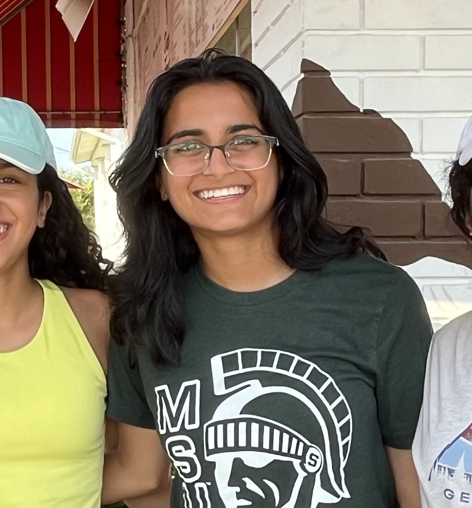

Hi! My name is Anishi Desai, and I am the one and only author of this very blog!
Here we will talk about a number of topics, ranging from the weather of the day, any stock scares or celebrations, big news happening around the world, and much more. I am happy to always take suggestions as it increases my awareness on what is going on in the world and how I can maybe put my two cents in.
But enough about the blog, lets talk about... me!
I am from the Chicago Suburbs in Illinois, and am currently a junior at Michigan State University studying Information Science as well as pursuing a minor in Business. Pretty solid work I'll have to say, and its honestly been so incredible to see the amount of other people that are in this major since when I was going into it, I had no idea what it was like myself. Now that I've given it a chance, I definitely am happy with the path I have ahead of me.
Outside of the educational life, I love staying active -- whether it be with friends or as some alone time, its what I enjoy to do the most. Recently, I've picked up on the sport of Ultimate Frisbee, and it has been amazing! I play on MSU's Women's Club team called Moose, and the people I've met are nothing short of wonderful. I also love to hike; the last hiking trip I went on was at Zion National Park in Utah, which I highly recommend for not only the getting-outside part, but for the incredible views and adventures it takes you on.
I have one twin sister, Kayla. She attends University of Iowa and is heading on the medical track, which is awesome might I say. It was hard at first to be apart after being together our whole lives, but we call almost everyday so its not too bad. I get to see her over our school breaks and during the summer as well which is very nice. Fun fact about us, we have moved about eight times since we were born.
- Atlanta, Georgia
- Somewhere in Illinois
- Streamwood, Illinois
- Streamwood, Illinois, again
- Hoffman Estates, Illinois
- Palatine, Illinois
- Palatine, Illinois, again
- Palatine, Illinois, currently
May seem like a lot, but we are still very close nonetheless.
That's all there is to tell about me, please enjoy all my entries and leave a few comments of your own at the end! I'd love to see your takes on the topics that are presented in the blog. Have a lovely day, night, afternoon, evening, and all of the above!